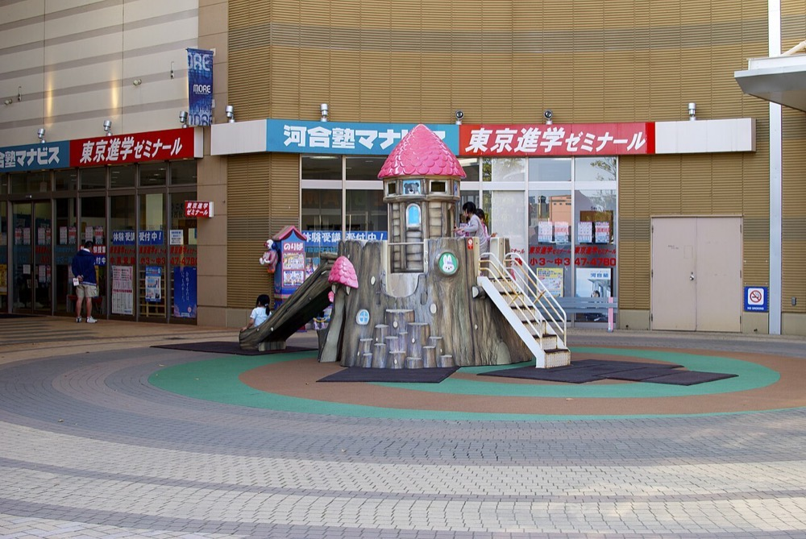
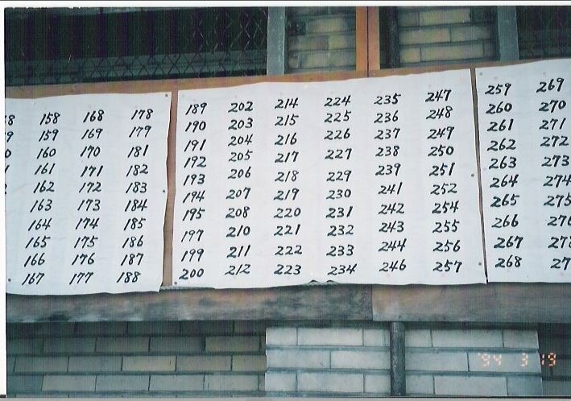

地方で生徒数を減らしている中小の学習塾を、融資を使って1社ずつ買収する。教材・講師の採用・授業の配信・保護者への連絡を1つの体制に統合し、教室ごとの費用を下げる。少子化で生徒数が減る地域で、統合後も残る教室に生徒を集める。
学習塾の市場規模の公的な統計は確認できなかった。民間の調査会社の推計として約9,850億円、1兆円前後の横ばいという値が引用されているが、対象の年度を確認できなかった1。経済構造実態調査では、学習塾と教養・技能教授業を含む「その他の教育、学習支援業」の売上高が2023年に3.9兆円である2。
東京商工リサーチの集計では、全国の主な学習塾396社の2023年度の売上高は5,431億円で前期比1.0%増である。売上高100億円以上の19社が3,600億円で66.2%を占める。5億円未満の319社の合計は263億円で4.8%に留まる3。
推計 本案の対象市場 ＝ 学習塾の市場 約1兆円 − 売上高100億円以上の大手の売上 約3,600億円 ≒ 約6,400億円
1兆円は年度を確認できない引用値であり、大手の売上は396社の集計である。中小の個人塾の多くは396社の集計に含まれない。いずれも本ページの推計である。
各国に学習塾に当たる業態はあるが、制度と教育課程が国ごとに異なる。本ページでは世界の市場規模を一次情報で確認していない。
| 年 | 変化 | 数値 |
|---|---|---|
| 2023年度 | 主な学習塾396社の損益 | 赤字は126社で31.8%。前々期の26.0%から上昇した3 |
| 2024年 | 出生数 | 68万6,173人で前年比4万1,115人減。合計特殊出生率は1.15で過去最低4 |
| 2024年 | 学習塾の市場からの撤退 | 倒産53件と休廃業・解散195社で合計248社3 |
| 2024年度 | 売上5億円未満の中小塾の損益 | 約4割が赤字。売上50億円以上の大手は9割超が黒字5 |
| 2025年 | 学習塾の倒産 | 55件で過去最多。従業員5人未満が92.7%6 |
大手と中小の損益の差が広がっている。中小の塾は少子化に加え、講師の採用難と物価の上昇で費用が増えている5。倒産の9割超は従業員5人未満の塾である6。廃業すれば生徒は他の塾に移るだけだが、譲渡すれば経営者は対価を得られる。統合の受け皿の需要はこの差から生まれる。
| 種類 | 事業者 | 動き |
|---|---|---|
| 全国の大手 | 売上高100億円以上の19社 | 主な学習塾の売上の66.2%を占める3。映像授業と個別指導の全国チェーンを含む |
| 地域の中堅 | 売上高10億〜50億円の35社 | 1つの県か地方で集団指導の教室網をもつ3 |
| フランチャイズ | 個別指導の本部 | 加盟した個人の塾を束ねる。加盟店の売上は本部の売上に含まれない |
| オンライン | 映像授業とオンライン個別指導 | 教室をもたず全国から生徒を集める |
個々の大手の売上高と市場シェアは、本ページでは一次資料で確認していない。

首位の条件 学習塾の市場約1兆円で首位になるには、大手19社のうち最大の会社を上回る売上が必要で、10年の買収では届かない。首位を狙えるのは1つの県の学習塾である。条件は3つある。①同じ県の中堅塾を集中して買収し、高校受験の合格実績を1つのブランドに集めること。②教材と授業の配信を統合し、生徒の少ない教室でも採算が取れる費用構造にすること。③講師の採用と育成を本部で行い、地方の講師不足を解消すること。

1社目は、1つの県で5〜10教室をもち、売上高3億円前後で後継者のいない集団指導か個別指導の塾とする。創業者が社長に就き、旧経営者を教務の責任者として残す。
| 用途 | 金額 | 検証すること |
|---|---|---|
| 検索期間の生活費と活動費 6か月 | 500万円 | 地銀と税理士からの紹介で条件に合う案件を何件得られるか |
| 財務・労務の調査、仲介手数料 | 600万円 | 講師の未払残業代、前受金の扱い、教室の賃貸契約 |
| 1社目の株式取得の自己資金 | 2,400万円 | 売上高3億円の塾を約1.5億円で取得できるか |
| 教材と授業配信の仕組みの導入 | 500万円 | 教室当たりの講師の人件費をどこまで下げられるか |
| 合計 | 4,000万円 |
| 月 | 計画 |
|---|---|
| 1〜3月目 | 対象を1つの県に絞る。教室数5〜10・生徒数500人以上・地域の高校受験で合格実績がある、の条件を満たす塾を20社集める |
| 4〜6月目 | 3社と面談し1社と基本合意する。生徒の退塾率と講師の勤続年数を確認する |
| 7月目 | 株式を取得する。資金は自己資金2,400万円、日本政策金融公庫の事業承継向け融資約7,000万円7、地銀の融資約4,000万円、売主への分割払い約1,600万円とする |
| 8〜12月目 | 冬期講習と入試の時期は運営を変えず、保護者と講師の離反を防ぐ。2社目の候補を同じ県で3社まで絞る |
1年目の判定基準は、生徒数と講師数を買収前の水準で保ち、春の新規入塾者数が前年を上回ることである。
学習塾は教室を賃借することが多く、担保になる資産が少ない。授業料は月謝として前に受け取るため運転資金の負担は小さい。
| 段階 | 資金 | 金融機関 | 条件 |
|---|---|---|---|
| 1社目 1年目 | 事業承継融資、買収融資、売主の分割払い | 日本政策金融公庫 国民生活事業、地銀 | 公庫の限度は別枠7,200万円7。地銀は生徒数の推移と営業キャッシュフローを見て貸す |
| 2〜5社目 2〜4年目 | 持株会社による買収融資、資本性劣後ローン | 地銀、日本政策金融公庫 中小企業事業 | 資本性ローンの限度は15億円、期限一括返済で最長20年8 |
| 6社目以降 5年目以降 | シンジケートローン | 地銀の協調融資 | 連結EBITDAの3倍前後を上限に借りる。少子化で生徒数が減る前提のため倍率を低くする |
| 年目 | 1 | 2 | 3 | 5 | 7 | 10 |
|---|---|---|---|---|---|---|
| グループ会社数 | 1 | 3 | 5 | 12 | 22 | 40 |
| 売上高 億円 | 3 | 8 | 16 | 40 | 80 | 160 |
| 営業利益 億円 | 0.18 | 0.5 | 1.1 | 3.2 | 7.5 | 16 |
| 累計投資 億円 | 1.5 | 4 | 8 | 20 | 40 | 80 |
| 借入残高 億円 | 1.2 | 3.2 | 6.5 | 15 | 28 | 50 |
| 年目 | 1 | 2 | 3 | 5 | 7 | 10 |
|---|---|---|---|---|---|---|
| グループ会社数 | 1 | 2 | 3 | 5 | 8 | 13 |
| 売上高 億円 | 3 | 4.5 | 6.5 | 12 | 20 | 35 |
| 営業利益 億円 | 0.1 | 0.2 | 0.35 | 0.8 | 1.5 | 2.8 |
| 累計投資 億円 | 1.5 | 2.3 | 3.3 | 6 | 10 | 17 |
| 借入残高 億円 | 1.2 | 1.8 | 2.5 | 4.3 | 7 | 10 |
前提
楽観でも10年目は売上高160億円で、1,000億円の目安に届かない。保守では13社、売上高35億円に留まる。
楽観の10年目160億円は、学習塾の市場約1兆円の約1.6%である。売上高100億円以上の19社の平均は約189億円で3、楽観の10年目でもその平均を下回る。10年で全国の首位には届かない。
1つの県であれば首位になりうる。ただし県単位の学習塾の市場は、人口比で按分すると大きな県でも数百億円であり、1,000億円以上という日本一の定義を満たさない。県別の市場規模は確認できなかった。
停止する位置は3つある。1つ目は1社目で、旧経営者が退いた後に講師と生徒が離れる場合である。2つ目は少子化で、買収した地域の生徒数の減少が統合の効果を上回る場合である。3つ目は大手の映像授業とオンライン個別指導が地方の生徒を集め、地域の教室の優位が失われる場合である。
学習塾の授業は各国の教育課程と入試に合わせる必要があり、日本で統合した塾はそのまま海外では使えない。展開しうるのは日本の教育課程に沿った授業の配信である。
| 順 | 国 | 理由 |
|---|---|---|
| 1 | 日本人の駐在員が多い国 | 帰国後の受験に備える子どもに、日本の教育課程の授業をオンラインで販売する |
グローバルなインフラになる見込みは低い。
| # | 基準 | 判定 | 根拠 |
|---|---|---|---|
| 1 | 50年、魂を燃やし続けられるか | 創業者が判定 | |
| 2 | 10年以内に、国内市場規模1,000億円以上の市場でシェア1位になれるか | × | 楽観の10年目160億円は市場約1兆円の約1.6%で、県単位で首位になってもその市場は1,000億円に届かない |
| 3 | 4,000万円で始められ、融資で伸ばせるか | ○ | 約1.5億円の1社目は公庫と地銀の融資で取得できるが、担保が少なく生徒数の減少で借入の倍率は低くなる |
| 4 | グローバルなインフラになり得るか | × | 授業は各国の教育課程に合わせる必要があり、海外は駐在員の子ども向けの配信に限られる |
| 5 | 営業力が最初の売上に直接結びつくか | △ | 売上は保護者が支払う月謝で、法人営業が結びつくのは自治体の学習支援事業などに限られる |
| 6 | 同じビジョンを共有する仲間を誘える事業か | 創業者が判定 | |
| 7 | 本業が早く現金を生み、返済と出資の原資になるか | ○ | 月謝を前に受け取り設備投資も小さいが、利益率は数%で大半は返済に充てられる |
| 8 | 投資先を束ねる群の中核になれるか | △ | 学童・英語・配信の事業と顧客を共有できるが、市場が縮小しており群の規模は限られる |
| 9 | 成長の資金源がA・B・Cのどれに当たるか | C | 買収対象のキャッシュフローを返済原資にした借入で買収する。月謝の前受けはAの性質も一部もつ |
1. 少子化による生徒数の減少 2024年の出生数は68万6,173人で過去最少である4。買収した地域の生徒数は毎年減る。対策は人口の減少が緩やかな県庁所在地とその周辺を優先することである。全国的な減少そのものは潰せない。
2. 講師と教室長の離職 塾の価値は講師と生徒・保護者の関係にある。旧経営者が退くと講師が独立し、生徒を連れて移ることがある。対策は旧経営者と主要な教室長に持株会社の株式を割り当て、競業避止の契約を結ぶことである。
3. オンライン授業による代替 映像授業とオンライン個別指導は教室をもたず、地方の生徒も集められる。地域の教室の優位は合格実績と通塾の利便に限られる。対策はグループの教室でも映像授業を併用し、対面の指導を高校受験の直前期に集中させることである。
4. 前受金と簿外債務 月謝や講習費の前受金は、買収時に生徒への返金義務として残る。講師の未払残業代も財務諸表に現れない。対策は調査で前受金と労務を確認し、売主への分割払いで支払いの一部を後にすることである。
.jpg){kind=link}